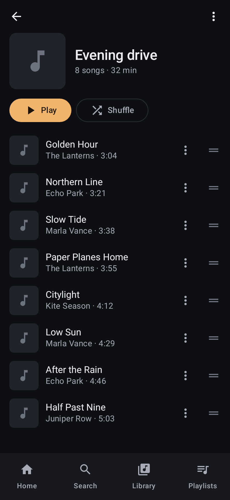
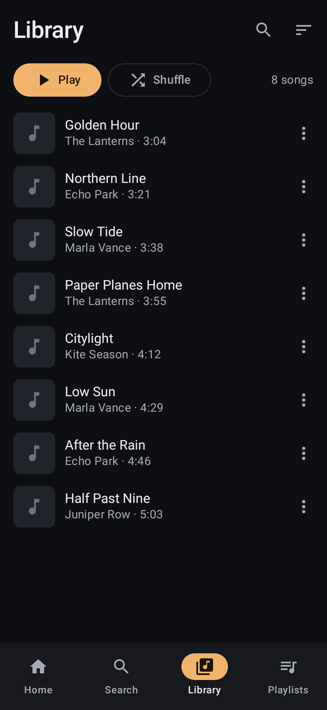
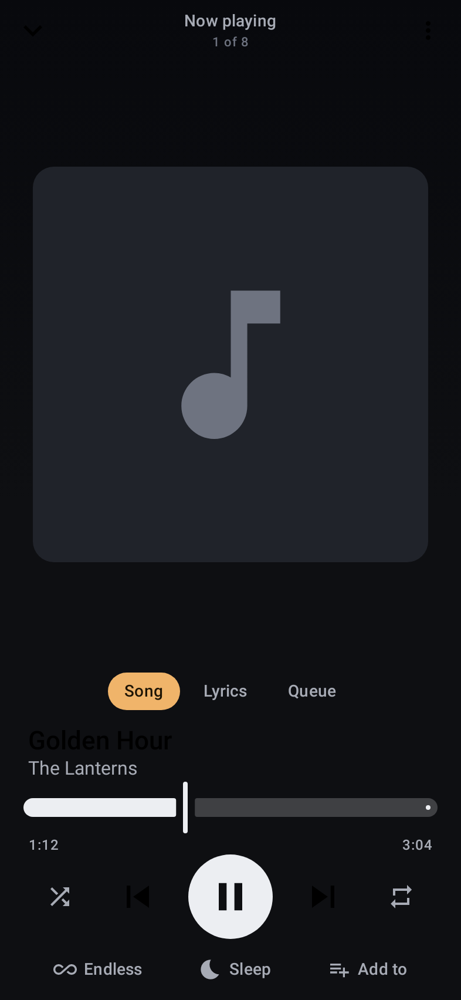
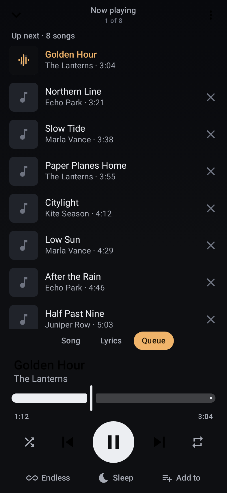
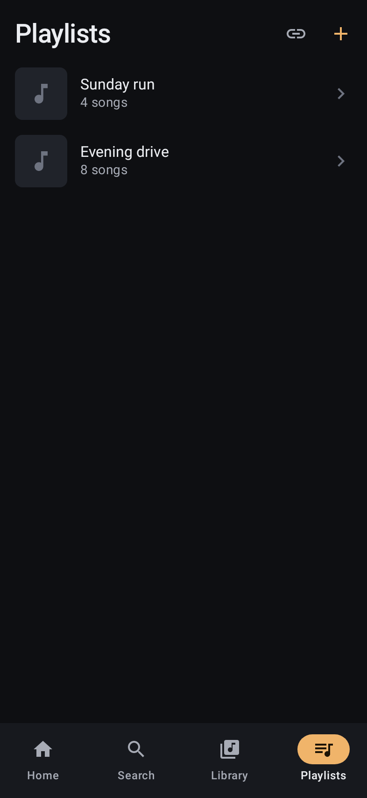
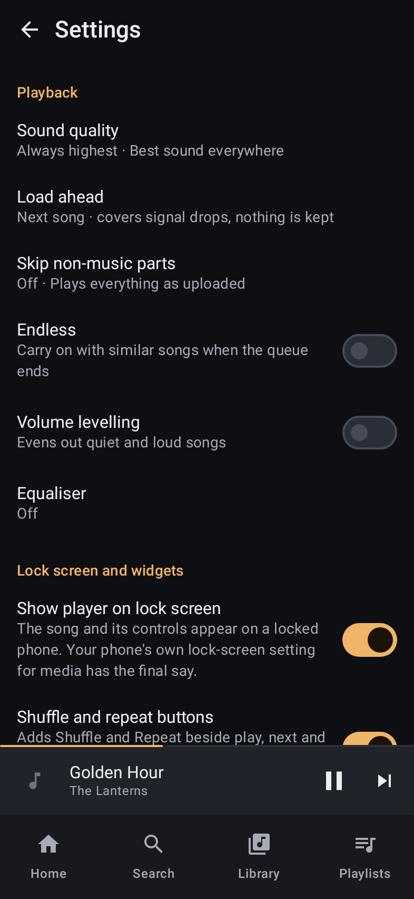
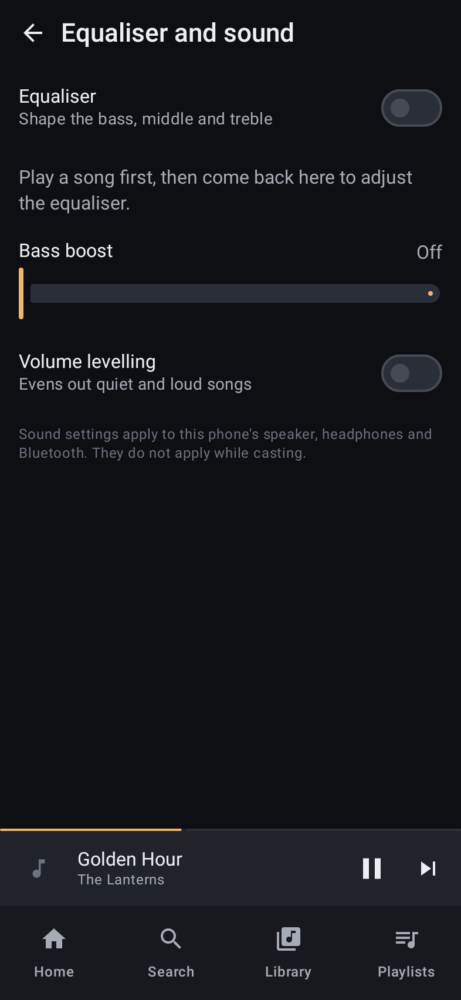

Any song, just the sound, with the screen off
Undertone is a music player for Android. Search for a song, add it to your library, and it plays the audio only, so your phone can sit in your pocket with the screen off.
Playlists, home-screen widgets, the lock screen, your car and your speakers all work, and everything you save can be backed up to your own Google Drive.
Undertone plays music that other people own. What the law says
- Version 1.2
- Android 10 or later, 64-bit
- 64 MB
Free, with nothing to unlock. No adverts, no account with the developer, no tracking. Compare or read the release notes.
Chrome may say the file might be harmful. It shows this for app files that do not come from Google Play. Choose Download anyway.

- No subscriptionEvery feature is in the free app.
- No advertsNone in the app and none on this site.
- No accountNothing to sign up for. Google sign-in is only for the optional backup.
- Audio onlySongs stream as sound, so they use less data.
A look inside
These are the real screens, drawn from the app's own code with made-up songs. Swipe or scroll sideways to see them all.






How it works
There is nothing to buy and no account to make. Undertone looks songs up on public video sites and plays the sound.
Search for a song
Type a song, an artist or an album, or paste a link. Results come in tabs: songs, videos, albums, artists and playlists.
Tick and add
Tick the songs you want and press Add. They go into your library and any playlists you choose.
Press play and lock the phone
The audio keeps playing with the screen off, with controls on the lock screen, in the notification, on Bluetooth and in the car.
Everything is in, and all of it is free
Nothing below is held back for a paid tier, because there is no paid tier.
Playing
- Audio only, always the best quality
- The highest sound quality on offer, without the picture.
- Loads the next song ahead
- So a song carries on through a weak signal. Nothing is kept on the phone.
- Endless
- When the queue runs out, Undertone carries on with similar songs, if you want it to.
- Sleep timer
- Stop after a set time or at the end of the song.
Your music
- Library and playlists
- Sort, search and shuffle. Bring in playlists from a link.
- Removed songs flagged
- If a song disappears from the site, Undertone says so and suggests a replacement.
- Lyrics
- Synced lyrics where they are available.
- Skip the talking
- Optionally skip non-music parts such as intros, using a shared community list.
Everywhere you listen
- Widgets
- One resizable player widget, plus one-tap playlist buttons.
- Lock screen and notification
- With shuffle and repeat, or hidden if you prefer.
- Android Auto and Bluetooth
- Browse and play from the car.
- Casting
- Send the sound to speakers and TVs that support casting.
Keeping it safe
- Google Drive backup
- Library, playlists, settings and history, in a hidden folder only Undertone can see.
- A copy to a file
- Save a backup file anywhere you like, and load it back.
- New-version notice
- Undertone tells you when a newer version is out.
Your listening is your business
No servers
Undertone has no accounts and no servers of its own. The developer never receives what you search for or play.
No ads, no tracking
There is no advertising, no analytics and no tracking in the app or on this site.
A narrow Drive permission
The backup can only see a hidden folder that belongs to Undertone. It cannot read anything else in your Drive.
Use it within the law
Undertone plays songs that are published on public video sites. Most of that music belongs to someone else. Use it for your own listening, in line with the law and the terms of the sites the songs come from.
- Copyright, Designs and Patents Act 1988. Recording, copying, sharing or playing music in public without permission can infringe copyright.
- The terms of the sites you listen from. Many video sites set their own rules on how their content may be used.
- UK GDPR and the Data Protection Act 2018. If you cast or share someone else's playlists or listening history, respect their privacy.
Laws differ in other countries. If you are not in the UK, the rules where you are apply. Read the terms of use.
Installing and updating
Undertone is not on Google Play, so your phone asks a couple of extra questions the first time.
Download the app file
Tap Download on your phone. The file is called Undertone.apk and is about 64 MB. If Chrome says the file might be harmful, choose Download anyway. First tick the box to say you will use the app within the law.
Allow the install
Open the file. The first time, Android asks you to allow your browser to install apps. Allow it, go back and tap Install. If Google Play Protect steps in, choose More details, then Install anyway.
Updating later
Undertone tells you when a newer version is out. Install the new file over the old one and everything you have saved is kept.
Version 1.2, released 21 November 2026. See the release notes, or check your download.
Questions
Is Undertone really free?
Yes. There is no paid version, no subscription and no adverts, and nothing in the app is locked.
Is Undertone on Google Play?
No. It is a personal project, downloaded from this site as an Android app file. It needs Android 10 or later on a 64-bit phone.
Does it download songs?
No. Undertone streams the sound and loads the next song ahead, but nothing is kept on the phone. It needs an internet connection to play.
Do I need an account?
No. You only sign in to Google if you want the Drive backup. Google Drive backup currently works only for Google accounts the developer has added while Google reviews the sign-in. Saving a backup to a file works for everyone.
Where does the music come from?
From public video sites. Undertone finds the song and plays its sound. It does not host any music itself.
How do I update Undertone?
Undertone tells you when a newer version is out. Download it from this site and install it over the one you have. Your library and playlists are kept.
Music in your pocket, screen off
Free, with no adverts and nothing to unlock. Made by the developer of several other free Android apps: see them all.